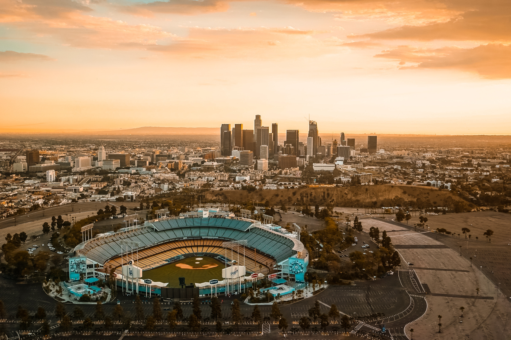

The Dodgers
The Los Angeles Dodgers MLB teams is my favorite. This past 2017 season, they made it to the World Series with over 100 wins, but unforunately lost to the Astros. But still, they remain my favorite team and I hope to make it on the team once I grow up..
